5 Correlation, Regression and Causation
5.1 Descriptive statistics for the relation between two or more variables
When we considered graphical ways to describe data we already considered the situation of having more than two variables. Very common graphical representations in such situations are line graphs (with multiple lines) when dealing with time series data or scatter plots when dealing with cross-sectional data. In particular scatter plots allowed us to visualise how two series were related to each other.
Here we replicate a scatter plot used in an earlier section. This plot illustrates how the country level 14-day covid case rate (in 2022, Week 10) relates to the countries Health expenditure as a share of the countries GDP.

It is somewhat difficult to see from this plot whether there was indeed a positive relationship between these two variables or not. In fact there are three aspects of a potential relationship you may be interested in. First, is it a positive or negative relationship, second, whether it appears to be a linear or nonlinear relationship and third, how strong is that relationship. In this section you will learn how to find numerical descriptive statistics that that speak to these aspects of such a relationship.
This video provides a short introduction to correlation
5.2 Correlation
A commonly used measure of association is the sample correlation coefficient, which is designed to tell us something about the characteristics of a scatter plot of observations on the variable \(Y\) against observations on the variable \(X\). In particularly, are higher than average values of \(Y\) associated with higher than average values of \(X\), and vice-versa? In the context of the above example we would ask whether higher values of health expenditure (as % of GDP) are related to higher Covid infection rates.
Consider the following data-set in which we observe the weight (\(Y_i\)) measured in pounds and the height (\(X_i\)) measured in inches of a sample of 12 people:
| 1 | 2 | 3 | 4 | 5 | 6 | 7 | 8 | 9 | 10 | 11 | 12 | |
| Weight \(=Y_i\) | 155 | 150 | 180 | 135 | 156 | 168 | 178 | 160 | 132 | 145 | 139 | 152 |
| Height \(=X_i\) | 70 | 63 | 72 | 60 | 66 | 70 | 74 | 65 | 62 | 67 | 65 | 68 |
The best way to graphically represent the data is the following scatter plot:
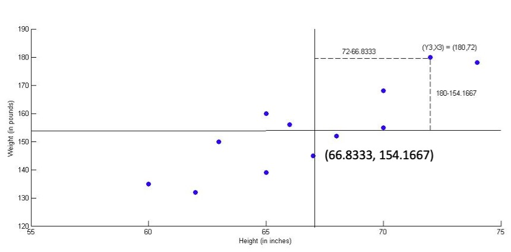
On this graph a horizontal line at \(y=154.1667\) (at the sample mean \(\bar{y}\)) and also a vertical line at \(x=66.8333\) (at the sample mean \(\bar{x}\)) are superimposed. This creates four areas. Points in the upper right quadrant are those for which the weight is higher than average and height is higher than average. One of these points (Observation \(i=3\) with \(y_i=180, x_i=72\)) is highlighted in the scatter plot along with its deviations from \(\bar{x}\) and \(\bar{y}\).
Points in the lower left quadrant are those for which weight is lower than average and height is lower than average. Since most points lie in these two quadrants, this suggests that higher than average weight is associated with higher than average height; whilst lower than average weight is associated with lower than average height. This is typical for a positive relationship between \(X\) and \(Y\). If there was no association, we would expect to see a roughly equal distribution of points in all four quadrants.
While it is often straightforward to see the qualitative nature of a relationship (positive, negative or unrelated) we want a numerical measure that describes this relationship such that we can also comment on the strength of the relationship. The basis of such a measure are again the deviations from the sample mean (as for the calculation of the variance and standard deviation), but now we have two such deviations for each observation, the deviation in the \(Y\) variable, \(d_{y,i}=(y_i-\bar{y})\), and the deviation in the \(X\) variable, \(d_{x,i}=(x_i-\bar{x})\). These are the deviations you can see in the above Figure.
In the case of the third observation with \(y_3=180\) and \(x_3=72\) we can see that both values are larger than the respective sample means \(\bar{y}\) and \(\bar{x}\) and therefore both, \(d_{y,i}\) and \(d_{x,i}\) are positive. \ \(d_{y,i}=(y_i-\bar{y})\) = 180-154.1667 = 25.8333\ \(d_{x,i}=(x_i-\bar{x})\) = 72-66.8333 = 5.1667
In fact this will be the case for all observations that lie in the upper right quadrant. For observations in the lower left quadrant we will find \(d_{y,i}\) and \(d_{x,i}\) to be smaller than 0. Observations in both these quadrants are reflective of a positive relationship. We therefore need to use the information in \(d_{y,i}\) and \(d_{x,i}\) in such a way that in both these cases we get a positive contribution to our statistic that numerically describes the relationship. Consider the term \((d_{y,i} \cdot d_{x,i})\); this term will be positive for all observations in either the upper right or lower left quadrant. For values in either the upper left or lower right quadrant, however, the terms \(d_{y,i}\) and \(d_{x,i}\) will have different signs and hence the term \((d_{y,i} \cdot d_{x,i})\) will be negative, reflective of the fact that observations in these quadrants are representative of a negative relationship.
It should now be no surprise to find that our numerical measure of a relationship between two variables is based on these terms. In particular we will use what is called the sample covariance:
\[\begin{equation*} Cov(X,Y)=s_{X,Y}=\frac{1}{n-1}\sum_{i=1}^{n}\left( x_{i}-\bar{x}\right) \left( y_{i}-\bar{y}\right) =\frac{1}{n-1}\sum_{i=1}^{n} d_{x,i} d_{y,i} \end{equation*}\]
You can see that this is the sum of \(d_{y,i}d_{x,i}\) divided by \(n-1\). The reason for dividing by \(n-1\) and not \(n\) is similar to the reasoning used for the sample variance. In fact the measure that we typically use is the :
\[\begin{eqnarray*} Corr(X,Y)=r_{XY}&=&\frac{s_{X,Y} }{\sqrt{s^2_X s^2_Y}}\\ &=& \frac{\frac{1}{n-1}\sum_{i=1}^{n}\left( x_{i}-\bar{x}\right) \left( y_{i}-\bar{y}\right) }{\sqrt{\frac{1}{n-1}\sum_{i=1}^{n}\left( x_{i}-\bar{x}\right)^{2}\,\frac{1}{n-1}\sum_{i=1}^{n}\left( y_{i}-\bar{y}\right) ^{2}}}\\ &=& \frac{\sum_{i=1}^{n}\left( x_{i}-\bar{x}\right) \left( y_{i}-\bar{y}\right) }{\sqrt{\sum_{i=1}^{n}\left( x_{i}-\bar{x}\right)^{2}\,\sum_{i=1}^{n}\left( y_{i}-\bar{y}\right) ^{2}}}\\ \end{eqnarray*}\]
It is the sample covariance divided by the square root of the product of the two sample variances. In the last line we merely cancelled out the \(1/(n-1)\) terms.
5.2.0.1 Excel application
The calculations are best done in a Table format or using Excel.
This video shows the calculations by hand (YouTube, 21min)
This video shows the calculations by Excel (YouTube, 11min)
| Obs | Weight (Y) | Height (X) | \(y_i-\bar{y}\) | \(x_i-\bar{x}\) | \((y_i-\bar{y})^2\) | \((x_i-\bar{x})^2\) | \((y_i-\bar{y})(x_i-\bar{x})\) |
|---|---|---|---|---|---|---|---|
| 1 | 155 | 70 | 0.8333 | 3.1667 | 0.6944 | 10.0278 | 2.6389 |
| 2 | 150 | 63 | -4.1667 | -3.8333 | 17.3611 | 14.6944 | 15.9722 |
| 3 | 180 | 72 | 25.8333 | 5.1667 | 667.3611 | 26.6944 | 133.4722 |
| 4 | 135 | 60 | -19.1667 | -6.8333 | 367.3611 | 46.6944 | 130.9722 |
| 5 | 156 | 66 | 1.8333 | -0.8333 | 3.3611 | 0.6944 | -1.5278 |
| 6 | 168 | 70 | 13.8333 | 3.1667 | 191.3611 | 10.0278 | 43.8056 |
| 7 | 178 | 74 | 23.8333 | 7.1667 | 568.0278 | 51.3611 | 170.8056 |
| 8 | 160 | 65 | 5.8333 | -1.8333 | 34.0278 | 3.3611 | -10.6944 |
| 9 | 132 | 62 | -22.1667 | -4.8333 | 491.3611 | 23.3611 | 107.1389 |
| 10 | 145 | 67 | -9.1667 | 0.1667 | 84.0278 | 0.0278 | -1.5278 |
| 11 | 139 | 65 | -15.1667 | -1.8333 | 230.0278 | 3.3611 | 27.8056 |
| 12 | 152 | 68 | -2.1667 | 1.1667 | 4.6944 | 1.3611 | -2.5278 |
| Sum | 1850 | 802 | 0 | 0 | 2659.6667 | 191.6667 | 616.3333 |
If you calculate \(r\) for the above example you should obtain a value of
\[\begin{equation*} Corr(X,Y)=r_{XY}=\frac{616.3333}{\sqrt{2659.6667 \cdot 191.6667}} = 0.8632 \end{equation*}\]
Complete the table below and calculate, sample means, sample variances and standard deviations, the sample covariance and the correlation for the following four observations of \(Y\) and \(X\).
| Obs | Weight (Y) | Height (X) | \(y_i-\bar{y}\) | \(x_i-\bar{x}\) | \((y_i-\bar{y})^2\) | \((x_i-\bar{x})^2\) | \((y_i-\bar{y})(x_i-\bar{x})\) |
|---|---|---|---|---|---|---|---|
| 1 | 4 | 10 | -4 | 6 | 16 | 36 | -24 |
| 2 | 8 | -2 | 0 | -6 | 0 | 36 | 0 |
| 3 | 6 | 7 | |||||
| 4 | 14 | 1 | |||||
| Sum | 32 | 16 |
\(\bar{y} =\)
\(\bar{x} =\)
\(s_Y^2 =\)
\(s_X^2 =\)
\(Cov(X,Y) = s_{Y,X} =\)
\(Corr(X,Y) = r =\)
A few things are worth noting with respect to the correlation coefficient:
- It can be shown algebraically that \(-1 \leq r \leq 1\).
- Positive (negative) numbers represent a positive (negative) relationship and a value of 0 represents the absence of any relationship. In our Excel application example \(r=0.8632\) and hence the two variables display a strong positive correlation.
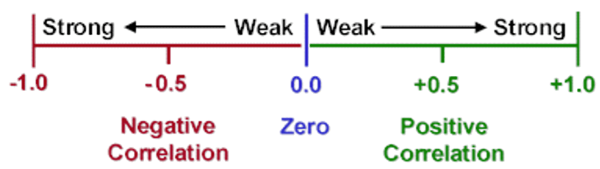
- The numerator contains the sum of the discussed cross products \(d_{y,i} \cdot d_{x,i}=(y_i-\bar{y})(x_i-\bar{x})\)
- The term in the denominator of the equation for \(r\) is related to the variances of \(Y\) and \(X\). These terms are required to standardise the statistic to be between -1 and 1.
- For the correlation the order of variables does not matter, i.e. \(r_{XY}=r_{YX}\).
The covariance is actually also a measure of the relationship between these two variables, but it has many of the same shortcomings as the variance (see the Descriptive Statistics lesson). Therefore we want a standardised measure (to ensure that \(-1\leq r \geq 1\). This standardisation uses the square root of the two respective variances.
There are two very important limitations of the correlation coefficient:
- In general, this sort of analysis does not imply causation, in either direction. Variables may appear to move together for a number of reasons and not because one is causally linked to the other.
For example, over the period 1945-64 the number of TV licences \((x)\) taken out in the UK increased steadily, as did the number of convictions for juvenile delinquency \(\left( y \right)\). Thus a scatter of \(y\) against \(x\), and the construction of the sample correlation coefficient reveals an apparent positive relationship. However, to therefore claim that increased exposure to TV causes juvenile delinquency would be extremely irresponsible.
Another example illustrating that correlation must not be mis-interpreted as a causal relationship is that of ice cream sales and shark attacks, illustrated in the following image.
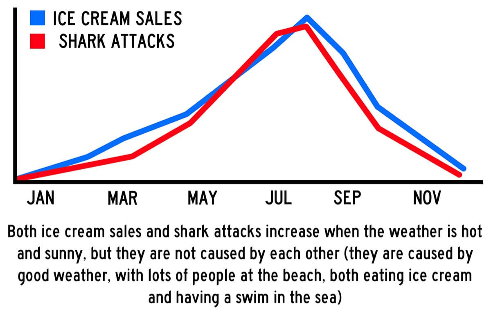
If we were to calculate a correlation between the two series we clearly would obtain a positive correlation. But nobody would suggest that increased ice-cream sales cause shark attacks, or indeed that increased shark attacks caused higher ice cream sales.
Here is a different discussion on this issue: Khan Academy: Do not confuse correlation with causation.
- The sample correlation coefficient gives an index of the apparent linear relationship only. It assumes that the scatter of points must be distributed about some underlying straight line. This is discussed further below. However, the term relationship is not really confined to such linear relationships.
Consider the relationship between and . If we were to plot observations for the age and income of people in the age range of 20 to 50 we will clearly find a positive relationship. However, if we were to extend the age range to 80, we would most likely see that income decreases at the upper end of the age range. Therefore there is no linear age/income relationship across the full age range and the correlation coefficient cannot be used to describe such a relationship.
Imagine drawing a straight line of best fit through the scatter of points in the above Figure (for height and weight) simply from visual inspection. You would try and make it go through the scatter, in some way, and it would probably have a positive slope. Numerically, one of the things that the correlation coefficient does is assess the slope of such a line: if \(r>0\), then the slope of the line of best fit should be positive, and vice-versa. Moreover, if \(r\) is close to either 1 (or -1) then this implies that the scatter is quite closely distributed around the line of best fit. What the correlation coefficient doesn’t do, however, is tell us the exact position of line of best fit. This is achieved using regression analysis.
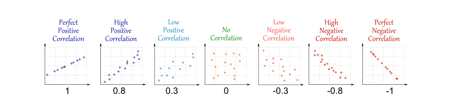
Consider the following Figure which displays six scatterplots

Match the correlations to the plots with the correlations. Note that the scales are identical for all plots.:
\(r_1 = 0.9226\): Plot \(r_2 = -0.8835\): Plot \(r_3 = 0.9931\) Plot \(r_4 = -0.9936\) Plot \(r_5 = -0.1988\) Plot \(r_6 = 0.4813\) Plot
The sign of the correlation tells you whether the correlation is positive or negative. The strength of the correlation tells you how close the points are to a straight line (not shown here but in the next section).
It is not straightforward to tell the plots for the last two correlations apart. Plot 6 shows some more points in the top right quadrant and hence is the one with the positive correlation.
5.2.1 Additional resources
5.3 Regression
When thinking about correlations you learned that correlation values close to 1 or -1 imply that the points will lie close to an imaginary line, the “line of best fit”. The following image shows the six scatter plots we looked at above but now including the lines of best fit.
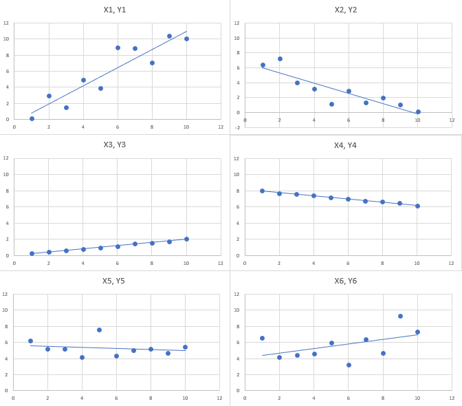
The lines of best fit drawn on the scatter can be represented algebraically as \(a+bx\). Here \(x\) represents the value on the horizontal axis, \(a\) is the intercept (i.e. the value on the vertical axis at \(x=0\)) and \(b\) is the slope (i.e. the value by which the line increases as we increase \(x\) by one unit). The line is defined at any value of \(x\) and not only those at which we have actual observations. Here you can see the line of best fit for for sample 1 with an indication of the intercept (\(a\)) and the slope (\(b\)). For the data in Sample 1 these values are \(a=-0.34\) and \(b=1.1327\). Just take these as given for now, you will shortly learn how to calculate these.
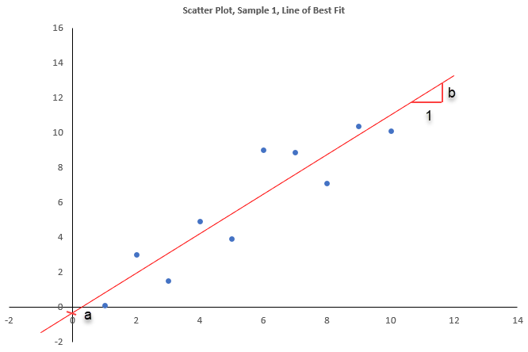
When you substitute any of the observed values \(x_i\) into the line of best fit you get \(\widehat{y}_i=a+bx_i\). It is important to note that the result of this operation, \(\widehat{y}_i\) is not the same as \(y_i\). Let us illustrate this in the above scatter plot. One of the scatter points is for \(x_i=6\) and \(y_i=9\) (the point is highlighted in red in the next plot.) If we plug in the values for \(a\) and \(b\), we get
\[\begin{equation*} \widehat{y}_i=a+bx_i = -0.34 + 1.1327 \cdot 6 = 6.4562 \end{equation*}\]
The difference between the two is what is often called the residual:
\[\begin{equation*} res_i=y_i-\widehat{y}_i = y_i - (a + bx_i) = y_i - a - bx_i. \end{equation*}\]
Here that residual is \(res_i=y_i-\widehat{y}_i =9-6.4562 = 2.538\).
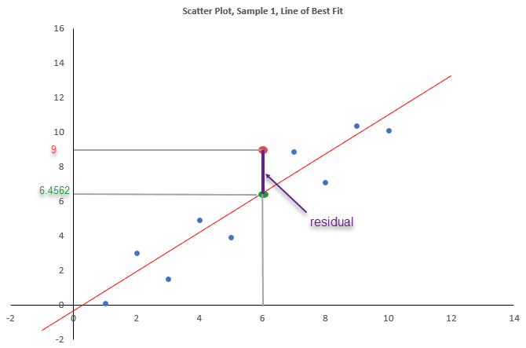
Calculate the residual for the following two observations:
- \(res_1\) for \(x_1=2\) and \(y_1=3\)
- \(res_2\) for \(x_2=8\) and \(y_2=7.1\) which are both points in the above scatter diagram.
You will note that one residual is positive and the other negative. What do these different signs represent in the scatter diagram?
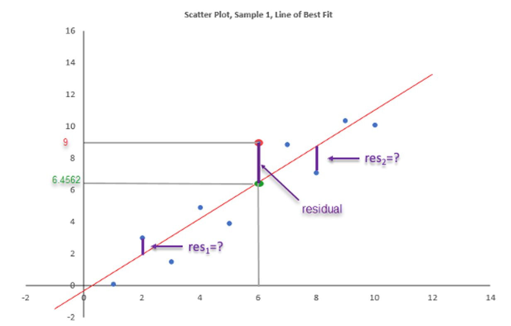
\(res_1 =\)
\(res_2 =\)
A positive sign for the residual implies that the actual observation lies the line of best fit.
\[\begin{equation*} res_1=3-\widehat{y}_1 = 3 + 0.34 - 1.1327 \cdot 2 = 3-1.9254 = 1.0746 \end{equation*}\]
and
\[\begin{equation*} res_2=7.1-\widehat{y}_2 = 7.1 + 0.34 - 1.1327 \cdot 8 = 7.1-8.7216 = -1.6220 \end{equation*}\]
If the residual is positive this implies that \(y_i>\widehat{y}_i\) and hence that the point \(y_i\) is above the regression line. If the residual is negative this implies that \(y_i<\widehat{y}_i\) and hence that the point \(y_i\) is below the regression line.
Above we used the relationship \(res_i= y_i - a - bx_i\) to calculate a residual. Re-arranging this delivers the equation which we will typically use to describe a regression relationship:
\[\begin{equation*} y_i = a + b x_i + res_i \end{equation*}\]
where \(a\) and \(b\) represented the intercept and slope coefficients for a particular line of best fit arising from a particular sample (which is why we call \(a\) and \(b\) sample estimates - but more on this in the inference section of the course). If we want to write this relationship in a general way, i.e. not specialised on a particular sample, but for the population of our data, then we write:
\[\begin{equation*} y_i = \alpha + \beta x_i + \epsilon_i \end{equation*}\]
Here we have replaced the \(a\) and \(b\) with \(\alpha\) and \(\beta\) and the residuals \(res_i\) with \(\epsilon_i\). \(\alpha\) and \(\beta\) represent the unknown values of the intercept and slope parameters that describe a liner relationship between \(y_i\) and \(x_i\) in the population. The error terms \(\epsilon_i\) now represent error terms acknowledging that, even in the population, the linear relationship will not precisely represent the data.
Only once we have a sample of data (as in the above table) we are able to find a line of best (described by \(a\) and \(b\)). We should note that this line (and hence the \(a\) and \(b\) values) is unique to the particular sample. A slightly different sample would have delivered different values for \(a\) and \(b\). (Note: This is not unique to a regression relationship. Assume you have a population of values for some random variable \(m_i\) with an unknown mean \(\mu_m\). Then you take a sample of values from this population and obtain a sample mean, \(\bar{m}\). Had you taken a different sample, this \(\bar{m}\) would also be different.)
5.3.1 Naming Conventions and Causation
In some sense estimating a regression model is not much different to calculating a correlation between two variables, \(X\) and \(Y\). When we did talk about correlations we also noted that \(r_{XY}=r_{YX}\), i.e. that the correlation between \(X\) and \(Y\) is identical to the correlation between \(Y\) and \(X\).
When undertaking a regression analysis this is not the case. The variables on the left hand side and the right hand side have different functions and therefore we call them by different names, such as dependent variable (on the left) and explanatory variable (on the right).
\[\begin{equation*} \underset{\begin{array}{c} \textrm{dependent variable}\\ \textrm{explained variable}\\ \textrm{outcome variable} \end{array}}{y_i} = \alpha + \beta \underset{\begin{array}{c} \textrm{independent variable}\\ \textrm{explanatory variable} \end{array}}{x_i} + \epsilon_i \end{equation*}\]
Let’s continue thinking about the relationship between height and weight. Does it matter whether we use height or weight as the dependent variable?
Which of the two combinations do you think is more sensible? Answer:
- A: Height = dependent variable and Weight = explanatory variable
- B: Weight = dependent variable and Height = explanatory variable
Here it is pretty obvious that individuals do have some control over their weight, but that ultimately their weight is to some degree a function of their height. Of course their weight is not solely determined by their height (do not forget their diet and levels of activity), but the height will play a role. Therefore Weight should be the dependent variable and height the explanatory variable.
The important thing to realise here is that it is YOU who has to decide which variable is dependent/explained and which is independent/explanatory. Sometimes this will be fairly obvious, like in the height-weight example, but sometimes it is not. (Is it interest rates which determine inflation or inflation which determines interest rates!!??). In any case, it is you who will have to bring your economic knowledge to the question and decide. The software (like Excel) will calculate regressions either way.
This issue is related to the very big question of whether you can interpret any relationship described by a regression model as a causal relationship. In fact this is such a big question that large parts of 2nd year Econometrics courses will be devoted to this question. There you will learn that this is a fiendishly difficult (and therefore exciting!!!) question. It is for now safe to assume that any regression results you obtain do NOT describe a causal relationship.
So in that sense regression analysis is not much different to calculating correlations. This seems to make the practice of using names like dependent and independent variables invalid. You can use these names as long as you are aware that regression results do not automatically deliver causal results. In fact, Excel will happily calculate results for both of the following regression models
\[\begin{equation*} Height_i = \alpha + \beta~ Weight_i + \epsilon_i \end{equation*}\]
and
\[\begin{equation*} Weight_i = \gamma + \delta~ Height_i + \epsilon_i \end{equation*}\]
They will produce different (yet related) intercept and slope coefficients which is the reason why we named them differently above. The point is, the software will not be able to tell you which of the two is the sensible way of looking at the data. It is your human understanding of the problem which tells you that only the second makes sense.
### Estimation
Regression analysis is the statistical technique that finds the optimal values for \(\alpha\) and \(\beta\) given a particular sample. We will soon see how to determine the best values for \(\alpha\) and \(\beta\). Let us return to the example of 12 observations with height (taking the role of \(x\)) and weight (in this example representing \(y\)) data. Here is our previous scatter plot without the line of best fit.
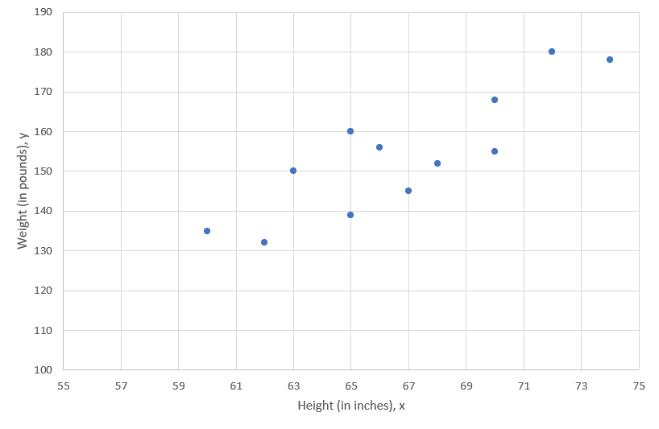
\textbf{Exercise}Draw a line which you think best fits the 12 data points (If you are looking at this on a screen take a ruler and hold it over the points). From your line, what can you say, roughly, about the intercept and slope of that line (only use eye-balling here, we will get to the precise results shortly).
The estimated slope coefficient will be
The estimated intercept coefficient will be
On the graph you cannot see \(x=0\). But when eye-balling the line of best fit it drops by around 60 weight units for a drop of 20 height units. That means that the slope is around 3. For a value of height = 60 the line of best fit has an approximate weight value of 130. If, for every height unit drop the weight drops by about 3, then y should drop by \(60 \times 3 = 180\) as x goes from 60 to 0. Hence, the intercept \(a\) should be at approximately \(130-180 = -50\). Don’t get confused by the graph only showing x values down to 55.
Let’s now calculate the actual sample estimates \(a\) and \(b\). And let’s do that precisely. But don’t forget these values will be specific to that particular sample of 12 observations. We will continue to not know what the true values \(\alpha\) and \(\beta\) are and, if we had a different sample we would get somewhat different values for \(a\) and \(b\).
Before we do so we want to point out what optimal means in this context. In fact it implies that we want to minimise the values for \(res_i\) for all \(i=1,...,n\) observations in the sample.

In fact what we want to minimise is the sum of squared residuals
\[\begin{equation*} (y_{1}-\widehat{y}_{1})^{2}+(y_{2}-\widehat{y}_{2})^{2}+...+(y_{12}-\widehat{y}_{12})^{2}=\sum_{i=1}^{n}(y_{i}-\widehat{y}_{i})^{2} = \sum_{i=1}^{n}(y_{i}-a-bx_{i})^{2}. \end{equation*}\]
This is equivalent to saying that we want to minimise the variation of our sample observations around the regression line (\(a+bx\)). The technique of obtaining the best values for \(\alpha\) and \(\beta\), which we call \(a\) and \(b\), in this way is also known as ordinary least squares (OLS) since it minimises the sum of squared deviations (sum of squared residuals) from the fitted line. We shall not dwell on the algebra here (You have a function and want to chose the \(a\) and \(b\) such that the function is minimised … two partial derivatives … setting them to 0 … solving for \(a\) and \(b\) … you know the drill), but the solutions to the algebraical problem are:
\[\begin{equation*} b=\frac{\sum_{i=1}^{n}(x_{i}-\bar{x})(y_{i}-\bar{y})}{\sum_{i=1}^{n}(x_{i}-\bar{x})^{2}},\quad a=\bar{y}-b\bar{x}; \end{equation*}\]
Here, as earlier, \(\bar{y}\) and \(\bar{x}\) are the sample means of variables \(y\) and \(x\). Applying the technique to the weight and height data yields \(b=616.3333/191.6667=3.2157\), and \(a=154.1667-3.2157\cdot 66.8333=-60.7491\). All the numbers we need here were calculated in the earlier Table for this example. This gives the smallest possible sum of squared residuals as \(677.753\), a value which is not so easily read of the table. The regression line (line of best fit) is therefore defined as:
\[\begin{equation*} \hat{y}=-60.7491+3.2157 \times x \end{equation*}\]
It turns out that this line should be quite close to the line of best fit I asked you to draw earlier. As it turns out our eyes are pretty good in visual fitting. This is particularly easy if you have the sample means of \(\bar{y}\) and \(\bar{x}\) available, as the line of best fit will always go through the point \({\bar{y}, \bar{x}}\).
5.3.1.1 Excel application
Video illustrating the estimation of a simple linear regression in Excel (YouTube, 6min).
When estimating the regression by EXCEL, the results are presented as follows:
 You can recognise that the sample estimates for the intercept and the slope appear in that regression output (highlighted in yellow). We will interpret a number of further values from that output as we go along. There is one which you should already recognise: The sample size (Observations) of 12. Another one, a little less obvious is the value of 2659.667. It appears here as “SS Total” or Sum of Squares Total. Find that value in the Table from which we calculated the correlation for this data set, it is \(\sum_{i=1}^{12}(y_{i}-\bar{y})^{2}\). It measures the amount of variation we can see in the dependent variable. What we want to achieve by using regression analysis is to explain some of this variation through \(y\)’s linear relationship with \(x\).
You can recognise that the sample estimates for the intercept and the slope appear in that regression output (highlighted in yellow). We will interpret a number of further values from that output as we go along. There is one which you should already recognise: The sample size (Observations) of 12. Another one, a little less obvious is the value of 2659.667. It appears here as “SS Total” or Sum of Squares Total. Find that value in the Table from which we calculated the correlation for this data set, it is \(\sum_{i=1}^{12}(y_{i}-\bar{y})^{2}\). It measures the amount of variation we can see in the dependent variable. What we want to achieve by using regression analysis is to explain some of this variation through \(y\)’s linear relationship with \(x\).
You can see from the regression output that here 74.5% of that variation is explained by that linear relationship (see the “R square” statistic at the top of the output.)
Which of the following are equivalent to the OLS estimator \(b\)? Answer TRUE if equivalent.
| Formula | answer |
|---|---|
| \(b=\frac{\sum_{i=1}^{n}(x_{i}-\bar{x})(y_{i}-\bar{y})}{\sum_{i=1}^{n}(x_{i}-\bar{x})(x_{i}-\bar{x})}\) | |
| \(b=\frac{n\sum_{i=1}^{n}(x_{i}-\bar{x})(y_{i}-\bar{y})}{n^{-1}\sum_{i=1}^{n}(x_{i}-\bar{x})^{2}}\) | |
| \(b=\frac{n^{-1}\sum_{i=1}^{n}(x_{i}-\bar{x})(y_{i}-\bar{y})}{n^{-1}\sum_{i=1}^{n}(x_{i}-\bar{x})^{2}}\) | |
| \(b=\frac{(n-1)^{-1}\sum_{i=1}^{n}(x_{i}-\bar{x})(y_{i}-\bar{y})}{(n-1)^{-1}\sum_{i=1}^{n}(x_{i}-\bar{x})^{2}}\) | |
| \(b=\frac{Cov(X,Y)}{s_X^2}\) | |
| \(b=\frac{Cov(X,Y)~s_Y}{s_Y~s_X^2}\) | |
| \(b=Corr(X,Y)~\frac{s_Y}{s_X}\) |
All but the second are equivalent. Use the definitions of sample covariance, correlation and standard deviations to confirm.
- Earlier in this lesson you calculated a number of statistics for a sample of \(n=4\) data points:
| Obs | Y | X |
|---|---|---|
| 1 | 4 | 10 |
| 2 | 8 | -2 |
| 3 | 6 | 7 |
| 4 | 14 | 1 |
| Sum | 32 | 16 |
The statistics calculated were:
\(\bar{y} = 8\), \(\bar{x} = 4\), \(s_Y^2 = 18.6667\), \(s_X^2 = 30\), \(Cov(X,Y) = s_{Y,X} = -16\), \(r = -0.6761\)
Please make sure you remember how to calculate these! Use this information to estimate the sample estimates \(a\) and \(b\), to obtain the line of best fit for the regression \(Y_i = \alpha + \beta X_i + \epsilon_i\) (to 4dp).
\(b =\)
\(a =\)
\(b=\frac{Cov(X,Y)}{s_X^2}=\frac{-16}{30}=-\frac{8}{15}\)
\(a=\bar{y}-b\cdot \bar{x}=8-(-\frac{8}{15})\cdot 4=\frac{120}{15}+\frac{32}{15}=\frac{152}{15}\)
There are a number of issues that need to be stressed here. The first relates, yet again, to the sample/population issue. In most cases the data available to run a regression will be sample data. Recall how we previously discussed that the \(\bar{x}\) was the sample estimate for some unknown population parameter \(\mu\) or the sample variance, \(s^2\) was the sample estimate of some unknown population variance, \(\sigma^2\). In the same spirit it turns out that the values of \(a\) and \(b\) that describe the line of best fit, are sample estimates of some unknown population parameters (usually labelled, \(\alpha\) and \(\beta\)).
Also note that \(b\) is the slope of the fitted line, \(\hat{y}=a+bx\); i.e., the derivative of \(\hat{y}\) with respect to \(x\):
\[\begin{equation*} b=d\hat{y}/dx \end{equation*}\]
and measures the increase in \(\hat{y}\) for a unit increase in \(x\).
Let us look at the height and weight example for which we established the regression line to be:
\[\begin{equation*} \hat{y}=-60.7491+3.2157 ~ x \end{equation*}\]
When you interpret regression results it is extremely important to be aware of the units in which the dependent and explanatory variables are measured. In the case of the Height-Weight example, the explanatory variable (Height, \(x\)) is measured in inches (1 inch = 2.54 cm) and the dependent variable (Weight, \(y\)) is measured in pounds (1 pound = 1 lbs = 0.454 kg). Do not ask why pounds are abbreviated as lbs. They are.
So, with that knowledge, how would we interpret the estimated slope coefficient, \(b=3.2157\)? To interpret this we need to adapt the general formula “\(b\) measures the increase in \(\hat{y}\) for a unit increase in \(x\)”. Applied to this example this implies the following:
- “The expected weight (\(\hat{y}\)) increases by 3.2157 pounds for every height increase of 1 inch.”
- “On average weight (\(\hat{y}\)) increases by 3.2157 pounds for every height increase of 1 inch.”
Recall that expectations are measured with averages, hence both expressions can be used.
The intercept in a regression, here \(a = -60.7491\), sometimes, but not always, can be interpreted. Note that the expected value, when the \(x\) variable takes the value of 0 (\(x=0\)) is \(\hat{y}=a\), and that is how we interpret the intercept. If someone has a height of 0 inches then we would expect the person to have a weight of -60.7491. This, of course, does not make any sense!!! There are no people with a height of 0. Interpreting the intercept only makes sense if the value of \(x=0\) is a sensible value and inside the sample of values of \(x\). In our example the smallest height is 60 inches and the largest height is 74 inches. So even interpreting the results for a height of 40 inches would not make sense as that as well would be outside the sample range.
5.4 Transformations of data
Numerically, transformations of data can affect the above summary measures. For example, in the weight-height scenario, consider for yourself what would happen to the values of \(a\) and \(b\) and the correlation if we were to use kilograms and centimetres rather than pounds and inches.
Convert the height of people from inches to cm (1 inch = 2.54 cm), but leaving the weight unchanged, measured in lbs, what are the regression results and how would you interpret the results?
5.4.0.1 Excel application
Video explaining the effect of re-scaling the explanatory variable (YouTube, 8min).
{{ < video https://youtu.be/aDNUHA4h4Xo >}}
The results as presented by EXCEL are shown here:
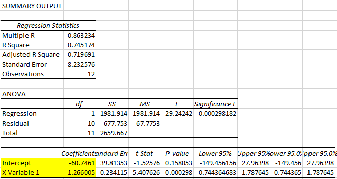
The estimated regression relationship is (noting that \(x\) is now measured in cm):
\[\begin{equation*} \hat{y}=-60.7461+1.2660 ~ x \end{equation*}\]
So the slope coefficient is smaller than the original ones which was 3.2157. Let’s calculate the ratio of these two estimates: \(3.2157/1.2660 = 2.54\). As we multiplied the explanatory variable by 2.54, this resulted in the slope coefficient being divided by the same amount. That is no accident.
What you basically did is best described by comparing the two regression models (giving the regression parameters different names). We start by looking at the original model (using the height measurement in inches):
\[\begin{equation*} Weight[lbs]_i = \alpha + \beta~ Height[in]_i + \epsilon_i \end{equation*}\]
Now we look at the regression model with height measured in centimeters but then convert it to one where height is measured in inches.
\[\begin{eqnarray*} Weight[lbs]_i &=& \gamma + \delta~ Height[cm]_i + v_i \\ Weight[lbs]_i &=& \gamma + \delta~ (2.54 \cdot Height[in]_i) + v_i \\ Weight[lbs]_i &=& \gamma + 2.54 \cdot \delta Height[in]_i + v_i \end{eqnarray*}\]
If you now compare the coefficients you see that \(\alpha = \gamma\) and indeed the new intercept is basically identical to the originally estimated constant. Comparing the two models tells us, that the slope coefficients should be related as follows: \(\beta =2.54 \cdot \delta\). And indeed, the original coefficient estimated (in the inches model) is 2.54 times larger than that estimated in the centimeter model.
Consider the following regression model:
\[\begin{equation*} Weight[kg]_i = \eta + \phi~ Height[in]_i + \epsilon_i \end{equation*}\]
How are the coefficients of this model related to those in the original model? Note that 1lbs = 0.454kg.
- A: $ = 0.454 $ and \(\phi = 0.454 \cdot \beta\)
- B: $ 0.454 = $ and $ 0.454 = $
- C: $ = $ and \(\phi = 0.454 \cdot \beta\)
- D: $ = $ and $ 0.454 = $
Which of these is correct?
We go through a similar transformation process as in the previous example:
\[\begin{eqnarray*} Weight[kg]_i &=& \eta + \phi~ Height[in]_i + u_i \\ 0.454 \cdot Weight[lbs]_i &=& \eta + \phi~ Height[in]_i + u_i \\ Weight[lbs]_i &=& \frac{\eta}{0.454} + \frac{\phi}{0.454} ~ Height[in]_i + \frac{1}{0.454}~\epsilon_i \\ \end{eqnarray*}\]
The last line is reformulated into the variables in their original units and hence we can compare coefficients: $ = 0.454 $ and \(\phi = 0.454 \cdot \beta\).
Estimate the following regression model in EXCEL:
\[\begin{equation*} Weight[kg]_i = \eta + \phi~ Height[in]_i + \epsilon_i \end{equation*}\]
Confirm that the estimated coefficients are indeed related to those in the original model as suggested in the previous exercise.
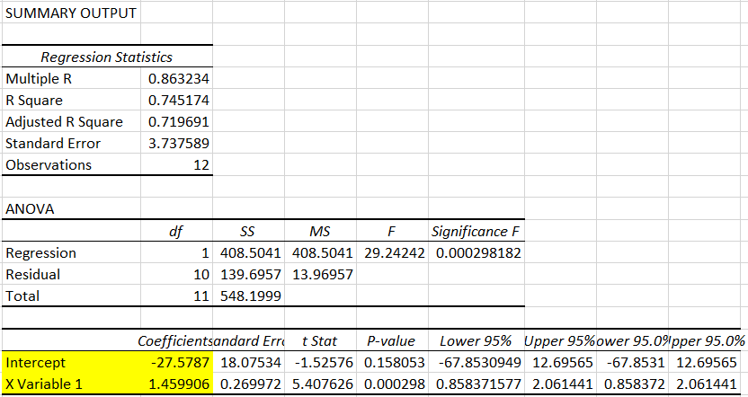
We find the intercept to be \(-27.5787\) which is indeed approximately \(0.454 \cdot -60.7461\) and the slope to be \(1.4599\) which is approximately \(0.454 \cdot 3.2157\).
In the examples above, the scatter plot of the data suggested that, indeed, if there was a relationship between two variables, then that relationship was well described by a linear relationship, i.e. a relationship which graphically follows, approximately, a straight line.
An important matter arises if we find that a scatter of a variable \(y\) against another, \(x\), does not appear to reveal a linear relationship. In such cases, linearity may be retrieved if \(y\) is plotted against some function of \(x\) (e.g., \(\log (x)\) or \(x^{2}\), say). Indeed, there may be cases when \(Y\) also needs to be transformed in some way. That is to say, transformations of the data (via some mathematical function) may render a non-linear relationship “more” linear.
A particular interesting transformation often used for economics series is a log-log transformation, which means that both dependent and explanatory variables are a log transform. In applied economics studies of demand, the \(\log\) of demand \((Q)\) is regressed on the \(\log\) of price \((P)\), in order to obtain the fitted equation (or relationship). Why does this make sense?
For example, suppose an economic model for the quantity demanded of a good, \(Q\), as a function of its price, \(P\), is postulated as approximately being \(Q=\alpha P^{\beta}\) where \(\alpha\) and \(\beta\) are unknown parameters, with \(\alpha>0\), \(\beta<1\) to ensure a positive downward sloping demand curve.
The nice thing about such a model is that the interpretation of \(\beta\) is the price elasticity of demand. Recall that this elasticity is defined as \((dQ/Q)/(dP/P)=(dQ/dP)(P/Q)\). From the above model you can derive that \(dQ/dP = \alpha \beta P^{\beta-1}\). With that information we get the following for the price elasticity in that model:
\[\begin{eqnarray*} \frac{dQ}{dP}\frac{P}{Q} &=& \alpha \beta P^{\beta-1}\frac{P}{Q}\\ &=& \alpha \beta P^{\beta-1}\frac{P}{\alpha P^{\beta}}\\ &=& \alpha \beta \frac{P^{\beta}}{\alpha P^{\beta}}\\ &=& \beta \end{eqnarray*}\]
Why does that make estimating a log-log model so attractive? Take the \(log\) on both sides of the postulated model you get \(\log(Q)=\alpha^{\ast}+\beta \log(P)\), where \(\alpha^{\ast}=\log(\alpha)\). Thus, if \(n\) observations are available, (\(q_{i},p_{i}\)), \(i=1,...,n\), a scatter plot of \(\log(q_{i})\) on \(\log (p_{i})\) should be approximately linear in nature. This then suggests that a simple regression of \(\log (q_{i})\) on \(\log (p_{i})\) would provide a direct estimate of the elasticity of demand which is given by the value \(\beta\), namely the estimated slope parameter.
6 Worked Example
Let’s think about a new example in which estimating a simple regression can provide some good insight. Picture yourself in this Advanced Statistics class and assume that you have also done a previous Advanced Mathematics class. Let’s call the variable representing your grade in Advanced Maths \(M\) and you are currently studying for your Advanced Statistics course (yes, if you are reading this you are!! well done). Let’s call the variable for that grade \(S\). At this stage you have your grade for Maths, but not the one for Stats.
Let’s create a model with which we can predict your grade in Advanced Statistics. In the datafile “Maths and Stats grades.xlsx” we have observations for 801 previous students for whom we know the grades for both \(M\) and \(S\), in other words, we have a sample (\(m_{i},s_{i}\)), \(i=1,...,n=801\). (Note: the grades and names in the file are random but posess identical features as the real data in previous academic years.)
Let’s first look at a scatter plot for these data.

There are a number of observations from this plot:
- Each point represents one student and displays that students Advanced Maths and Advanced Stats grade, e.g. Ronan who had a grade of 29 in Advanced Maths and a grade of 66 in Advanced Stats)
- Clearly there is a positive relationship, students with higher grades in Maths tend to get higher grades in Stats as well.
- However, even for students with the same Advanced Maths grade (see the blue dots which represent the students with an Advanced Maths grade of 50) there is large range of Advanced Stats grade outcomes (here from 29 to 80).
Which of the following two regression specifications is most sensible?
- A: \(s_i = \alpha + \beta~ m_i + \epsilon_i\)
- B: \(m_i = \alpha + \beta~ s_i + \epsilon_i\)
Estimate your chosen regression.
You get it right if the “Multiple R” statistics is 0.4611743.
What is the estimated intercept? \(a =\)
What is the estimated slope coefficient? \(b =\)
What is the interpretation of the estimated intercept? (one correct answer only)
You should not interpret the intercept if the value of 0 for the explanatory variable (here the Advanced Maths grade) is not included inside the range of the observed values.
What is the interpretation of the estimated slope coefficient? (one correct answer only)
Apply the generic: “\(b\) measures the increase in \(\hat{y}\) for a unit increase in \(x\)”. So the correct answer is the first.
What percentage of the variation in the Advanced Statistics grades is explained by this model?
\(R^2 =\)
If you had an Advanced Mathematics grade of 50, what would be your expected Advanced Statistics grade?
\(\hat{s}=\)
\(\hat{s}=\) 26.4310 + 0.5418 = 53.521$
6.1 Additional resources
- Khan Academy: Setup of the OLS problem and how to proof that the above formulae for \(a\) and \(b\) and four follow on clips - click on “up next” at the end of each clip). But be careful, in his video Salman Khan uses \(m\) for what we call \(b\) and \(b\) for what we call \(a\). Life is never easy!
- Link to a full (55min) undergraduate, introductory lecture on regression. Minutes 1 to 22 are relevant for this lesson.